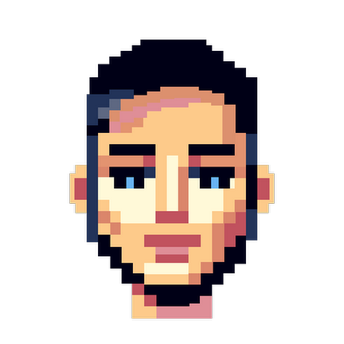

Sketchbook & progetti
Michele
Aldeni
comunicazione tecnica, design, idee
Il mio percorso è partito dallo studio delle lingue e dalla comunicazione tecnica; poi la curiosità mi ha portato al design dell'esperienza utente, per dare forma alle idee e renderle funzionali alla soluzione di problemi.

- Product design
- Technical writer
- UX design
- Brand design
[ Product design ]
Dal problema al prodotto: architettura, interfaccia, rilascio.
Adapta
Piattaforma di allenamento per runner: genera e adatta piani di corsa personalizzati su profilo atletico, log allenamenti e recupero.
WizTrail
Calcola la difficoltà di un percorso trail running da un file GPX e stima il tempo di gara personalizzato — tutto lato client, nessun dato lascia il browser.
Balzar
Generazione deterministica di contenuti da un payload minimo: un seme e un programma di regole ricostruiscono immagini, sequenze e assiemi 3D da un solo QR code.
DoqTool
Sistema di documentazione tecnica offline-first per PMI manifatturiere: editor documenti, KB con RAG locale, workflow e traduzioni integrate.
[ UX design ]
L'utente al centro della progettazione.
Wego
App di carpooling per studenti e professionisti: gruppi di viaggio nelle vicinanze, pensata per essere affidabile, economica e un po' più sociale del solito tragitto casa-lavoro.
Jeff
App contro lo spreco alimentare: suggerisce ricette dagli ingredienti che hai in frigo e lascia condividere le proprie con la community.
Fresco
Piattaforma di ordini e delivery per un ristorante di nuovo concetto: il piatto si compone passo dopo passo, direttamente sul sito.
Sign up page
Template di registrazione riutilizzabile, pensato per il flusso d'iscrizione a un evento.
Lynx ProVision
Landing page per un prodotto sportivo: occhiali tecnici da corsa.
Buon Mercato
Marketplace che collega produttori locali e consumatori: filiera corta, prodotti freschi, meno impatto della distribuzione.
[ Brand design ]
Identità visive che tengono insieme tono di voce, colore e forma.
Vetta Mountainwear
Naming, logo e stile per un brand di abbigliamento outdoor.
Maccu
Sito vetrina photo-first per un'attività artigianale: palette crema/argilla/inchiostro, sistema tipografico su quattro registri, griglia prodotti a schermo pieno.
KB
Identità di un brand di abbigliamento tecnico: nome, logo e sistema visivo costruiti attorno a montagna, tradizione ed esplorazione.
asd Taino
Rebranding di una società sportiva locale: identità più moderna per aumentare la visibilità del club e coinvolgere il territorio.
Logo 4 fun — Rundagi Trail
Logo per un gruppo amatoriale di running, giusto per il gusto di disegnarlo.